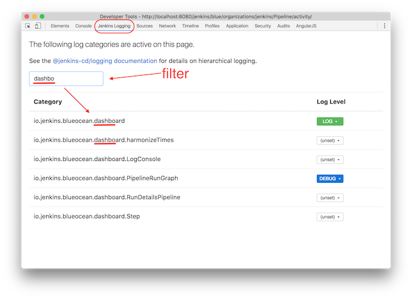

Client-side Logging APIs for Jenkins.
API
This API supports hierarchical logging categories i.e. if the log Level for a category is not configured (see setLogLevel), the log Level for that category will come from the "dot parent" category i.e. if you create a logger for category "a.b.c", but "a.b.c" is not configured with a log Level, it will check and use the log level configured on "a.b" etc.
logger(category)
Create a Logger instance for logging to the specified category.
- category: The log category for the logger. See above notes on hierarchical logging categories.
Note: The Logger instance will default to Level.ERROR if the category is not configured (and none of it's "dot parents").
const logging = require('@jenkins-cd/logging');
const logger = logging.logger('org.jenkinsci.sse');
// Log messages ...
if (logger.isDebugEnabled()) {
logger.debug('Log a message for x and y values: ', x , y);
}See the Logger class for detail on the Logger methods.
setLogLevel(category, level)
Set the logging Level for the specified log category.
- category: The log category to be configured. See above notes on hierarchical logging categories.
- level: The log Level.
This function is intended for use by browser tooling (e.g. Chrome Developer Extension) for configuring the log levels.
const logging = require('@jenkins-cd/logging');
logging.setLogLevel('org.jenkinsci.sse', logging.Level.DEBUG);See the "Browser Configuration" section below for information on how to discover and configure log levels in the browser.
getCategoriesStorageNS
Get the StorageNamespace used to store log level configurations.
This function is intended for use by browser tooling (e.g. Chrome Developer Extension) for configuring the log levels.
Browser Configuration
This logging package uses browser localStorage for storing log settings. We have a Developer tool Extension for the Google Chrome browser (see below), making it easy to discover and configure log levels in Chrome. For other browsers (see below also), you need to use their "Storage Inspector" to discover and configure the log levels. Of course, it's also possible to use the Developer Console in any browser to programmatically set log levels via the Storage API.
Configuring log levels in the Storage Inspector of any of the Browsers is a simple process of locating the key for the log category of interest (all log category keys have a "jenkins-instance/logging/categories:" prefix) and changing it's value to the desired Level i.e. DEBUG, LOG, INFO, WARN, ERROR. See the following sections for specific examples.
Google Chrome
The easiest way to configure logging levels in Google Chrome is via the Jenkins Logging Chrome Devtools Extension. Once installed, a new "Jenkins Logging" tab will be added to the Developer Tools.

Of course, it's also possible use Google Chrome's Storage inspector.

Firefox
The following image shows Firefox's Storage inspector. Note that the Storage Inspector in Firefox is not enabled by default, so you'll need to enable it in the Developer tools Settings if it's not already enabled.

Note that Firefox has a useful "filter" field for narrowing the visible set of stored name/value pairs. Enter "jenkins-instance/logging/categories".
Safari
The following image shows Safari's Storage inspector. Note that the Developer tools in Safari is not enabled by default (and therefore the Storage Inspector), so you'll need to enable it in the Advanced section of the Browser Settings if it's not already enabled.


{kind=link}
{kind=link}